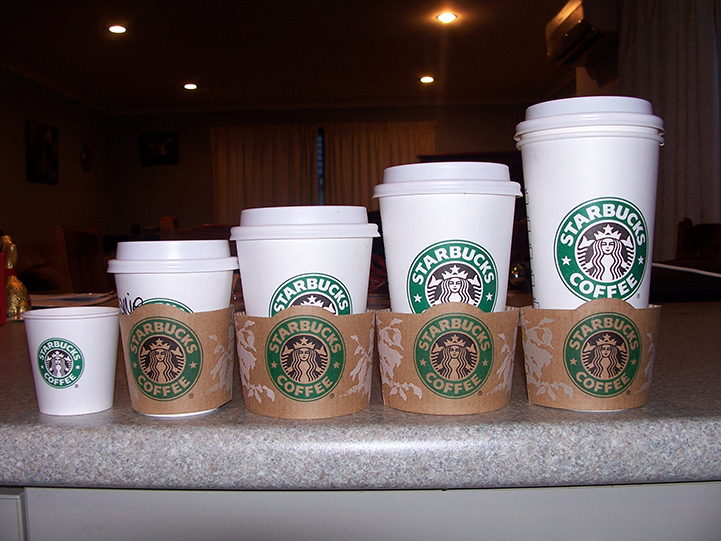
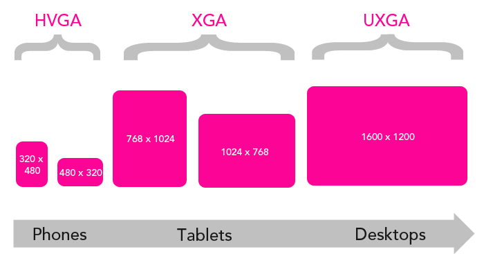
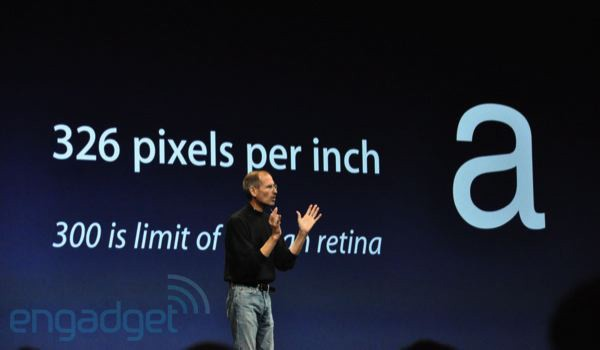
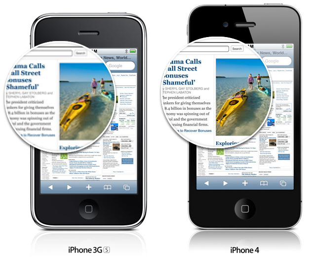
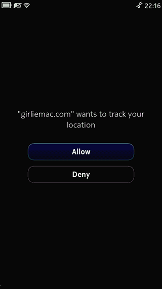
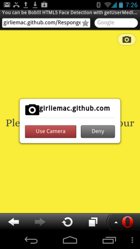
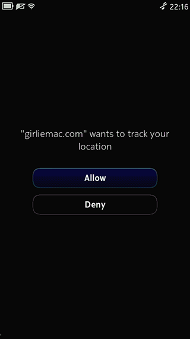
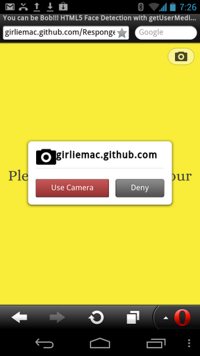

HTML5
The Mobile Approach
Tomomi Imura
July 21, 2012

The Mobile Approach
Tomomi Imura
July 21, 2012
Hello
my name is
Tomomi
@girlie_mac
How Do You Build Your Mobile Web?
A super silly demo: RespongeBob Web

@media handheld {
/* Some mobile-specific CSS here */
}
Only supported by:

Separate the UI by screen size
Separate by the width of the target viewport (browser display area)
@media only screen
and (min-width : 768px)
and (max-width : 1024px) {
/* Styles */
}
by device-width, the width of the device's screen size
@media only screen
and (min-device-width : 320px)
and (max-device-width : 480px) {
/* Styles */
}
combined with screen orientations
@media only screen
and (min-device-width : 768px)
and (max-device-width : 1024px)
and (orientation : landscape) {
/* Styles */
}...
separate by device pixel ratio

@media
only screen and (-webkit-min-device-pixel-ratio : 2),
only screen and (min-device-pixel-ratio : 2) {
/* Styles */
}

When a browser maps one pixel to one high DPI screen pixel, text and images become too small.
Solution:
Automatically magnify the UI and content (fit to HVGA, for instance).
@media only screen and (-webkit-min-device-pixel-ratio: 2),
only screen and (min-device-pixel-ratio: 2) {
//some hi-res css
}
e.g.
window.devicePixelRatio
Check it on your device:
http://goo.gl/XXVcI
e.g.
Android browser on Nexus One = 1.5
Chrome on Galaxy Nexus = 2
Opera Mobile on Galaxy Nexus = 2.25
with a zoom factor of 150% (e.g. 320px to 480px)
@media only screen and (-webkit-min-device-pixel-ratio: 1.5) {...}
@media only screen and (min--moz-device-pixel-ratio: 1.5) {...}
@media only screen and (-o-min-device-pixel-ratio: 3/2) {...}
The shortest MQ
@media (-webkit-min-device-pixel-ratio: 2), /* Wekit */
(min-resolution: 192dpi) /* Moz, Opera & IE */ {
...
}
* Typical Screen: 96dpi (96px = 1in in CSS units)
@media (-webkit-min-device-pixel-ratio: 1.5),
(min-resolution: 1.5dppx) /* Future */ {
...
}
They are the same :-)
.banner {
background-image: url(banner.png);
width: 320px; height: 160px;
}
@media only screen and (-webkit-min-device-pixel-ratio: 2),
only screen and (min-resolution: 192dpi) {
.banner {
background-image: url(banner-2x.png);
background-size: 100%;
}
}
<img src="logo.svg" width="">

W3C Responsive Images Community Group
<picture> <source srcset="small-1.jpg 1x, small-2.jpg 2x"> <source media="min-width: 600px" srcset="med-1.jpg 1x, med-2.jpg 2x"> <source media="min-width: 900px" srcset="large-1.jpg 1x, large-2.jpg 2x"> <img src="fallback.jpg" > </picture>
if (window.matchMedia('(orientation:landscape)').matches) {
/* landscape styles */
} else {
/* styles */
}
* Use Shim or pollyfill like Modernizr for the rescue.


Consider connection speed!
:hovertouchstart, touchend, touchmove, touchenter, touchcancel)
pointer - accuracy of a pointing device. none, coarse, fine. "Fat Finger"
hover - 0 or 1client-side APIs that enable the development of Web Applications and Web Widgets that interact with devices services

Old-school from XHTML-MP by OMA and still rocks
<a href="tel:+14155557777">Order Pizza Now!</a>
<a href="sms:+14155558888?body=Hello">Text me!</a>
detecting orientation and acceleration
accessing the accelerometer of the device
http://dev.opera.com/articles/view/w3c-device-orientation-api/

Event: deviceorientation
Values: absolute, alpha, beta, gamma
http://dev.opera.com/articles/view/w3c-device-orientation-api/

Try it on supported browsers: http://goo.gl/5Cj4d
if (navigator.geolocation) {
navigator.geolocation.getCurrentPosition(successCallback, failCallback);
}
function successCallback(position) {
alert('Latitude: ' + position.coords.latitude +
', Longitude: ' + position.coords.longitude);
}
W3C Geolocation Working Group
 



<input type="file" accept="image/*" capture="camera">
note:
screenshot from Firefox. Chrome/Android straight go to camera sans prompt.
navigator.getUserMedia({video: true, audio: true}, onSuccess, onError);
// with prefix. not on mobile yet navigator.webkitGetUserMedia(...); navigator.mozGetUserMedia(...);
The super silly demo again: RespongeBob Web / Make Me Bob!
Web Real-Time Communications Working Group
charging, chargingTime, dischargingTime, level
chargingchange, chargingtimechange, dischargingtimechange, levelchange
var battery = navigator.battery || navigator.mozBattery
|| navigator.webkitBattery;
function updateBatteryStatus() {
alert("Battery status: " + battery.level * 100 + " %");
if (battery.charging)
{alert("Battery is charging"); }
}
battery.addEventListener("chargingchange", updateBatteryStatus);
Try it on Firefox Mobile!
http://goo.gl/V1n6h

Try it on Firefox Mobile: http://goo.gl/V1n6h
navigator.vibrate(1000); // vibrate for 1sec
// vibrates for 1sec, still for 0.5 seconds, and vibrates again for 2sec: navigator.vibrate([1000, 500, 2000]);
navigator.mozVibrate(...);

Try it on Firefox Mobile!
http://goo.gl/EWPmL

navigator.connection.type //Values: unknown, ethernet, wifi, 2g, 3g, 4g, none
//values: UNKNOWN, ETHERNET, WIFI, CELL_2G, CELL_3G.

Tomomi Imura
http://girliemac.com
@girlie_mac